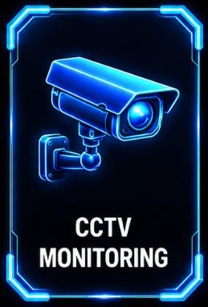

Security Monitoring / FSI-CCTV-06
CCTV Monitoring

SECURITY VISIBILITY
CCTV Monitoring System
Integrated video monitoring technology designed to support security awareness, operational visibility and protected environments.
Monitoring: Centralized video management
Integration: Network camera infrastructure
Application: Enterprise and perimeter security